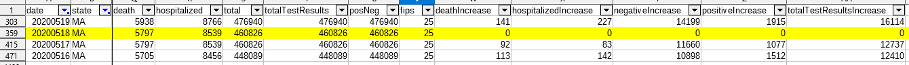
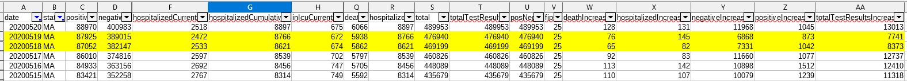

[Historical MA] Data is missing/incorrect for 5/18-5/19 in states_daily_4pm_et.csv
Issue number 455
andrewghaly opened this issue on May 25, 2020 at 3:30 pm
Data can be sourced from here: https://www.mass.gov/doc/covid-19-dashboard-may-18-2020/download

Comments
andrewghaly commented on May 25, 2020 at 5:59 pm
Could this please be reviewed: Before:
After: 
muamichali commented on May 26, 2020 at 8:30 am
Hi @andrewghaly Thanks for making all the information available. We will make the necessary updated to the data and post it when it is done.
stale[bot] commented on June 10, 2020 at 8:48 am
This issue has been automatically marked as stale because it has not had recent activity. It will be closed if no further activity occurs. Thank you for your contributions!
MattHilliard commented on June 18, 2020 at 6:48 pm
Thanks @andrewghaly for reporting this (and reminding me on the other issue). I’ve corrected the historical data for 6/18. It should show up on the web site within the hour.
Please assign to me